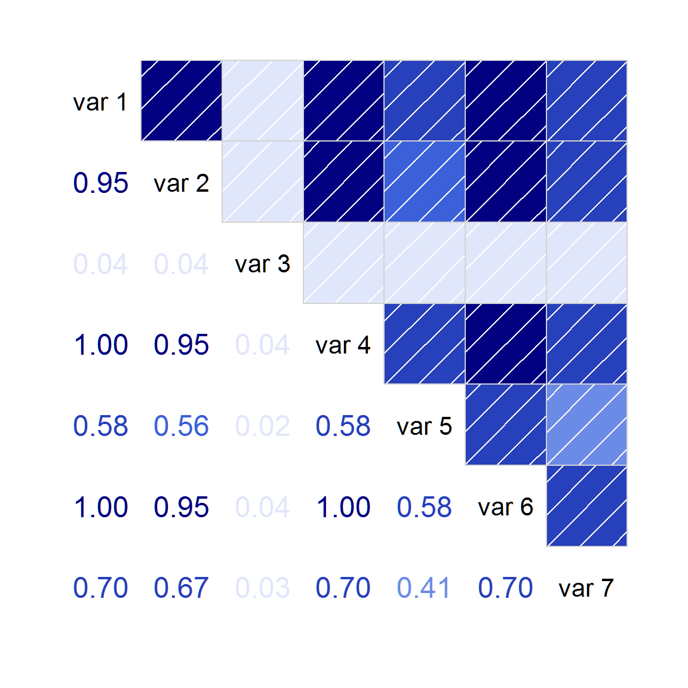

corrgram_cov2cor.RmdConsider the following matrix, as might arise from calculating covariance based on pairwise-complete data.
vv <- matrix(c(100.511, 159.266, 3.888, 59.964, 37.231, 32.944, 68.845,
159.266, 277.723, 6.161, 95.017, 58.995, 52.203, 109.09, 3.888,
6.161, 99.831, 2.32, 1.44, 1.274, 2.663, 59.964, 95.017, 2.32,
35.774, 22.212, 19.655, 41.073, 37.231, 58.995, 1.44, 22.212,
40.432, 12.203, 25.502, 32.944, 52.203, 1.274, 19.655, 12.203,
10.798, 22.566, 68.845, 109.09, 2.663, 41.073, 25.502, 22.566,
96.217), nrow=7, byrow=TRUE)
print(vv)## [,1] [,2] [,3] [,4] [,5] [,6] [,7]
## [1,] 100.511 159.266 3.888 59.964 37.231 32.944 68.845
## [2,] 159.266 277.723 6.161 95.017 58.995 52.203 109.090
## [3,] 3.888 6.161 99.831 2.320 1.440 1.274 2.663
## [4,] 59.964 95.017 2.320 35.774 22.212 19.655 41.073
## [5,] 37.231 58.995 1.440 22.212 40.432 12.203 25.502
## [6,] 32.944 52.203 1.274 19.655 12.203 10.798 22.566
## [7,] 68.845 109.090 2.663 41.073 25.502 22.566 96.217This is not a proper covariance matrix (it has a negative eigenvalue).
## [1] 4.808047e+02 9.965048e+01 4.595154e+01 2.657509e+01 8.304329e+00
## [6] 6.685001e-04 -8.147905e-04If we attempt to use the cov2cor() function to convert the covariance matrix to a correlation matrix, we find the largest correlation values are slightly larger than 1.0.
## [1] 1.000041If this is passed to the corrgram function, it will issue a warning that the input data is not a correlation matrix and then calculate pairwise correlations of the columns, resulting in a non-sensical graph.
There are several packages with functions that can be used to force the correlation matrix to be an actual, positive-definite correlation matrix. Two are given here.
## Loading required package: psych## Warning in psych::cor.smooth(cc): Matrix was not positive definite,
## smoothing was done## [1] 1library(sfsmisc)
# nearcor uses 'identical' and says the matrix is not symmetric
isSymmetric(cc) # TRUE## [1] TRUE## [1] FALSE## [1] 1After converting the matrix to a valid correlation matrix, an accurate corrgram can be created:
## Loading required package: corrgram